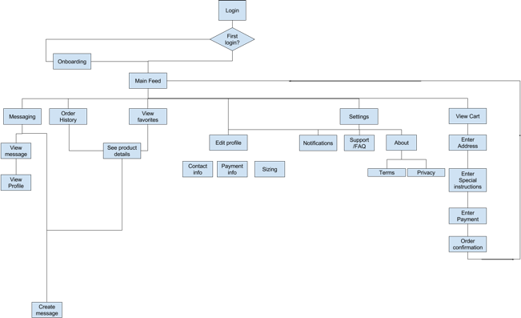
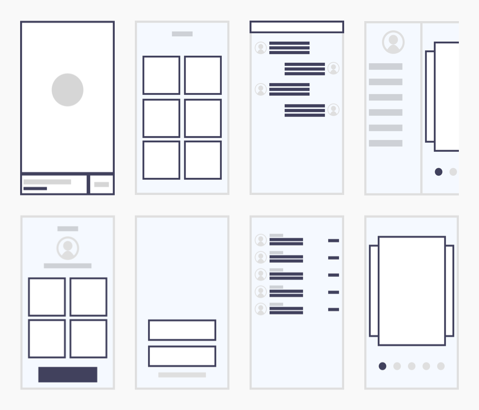
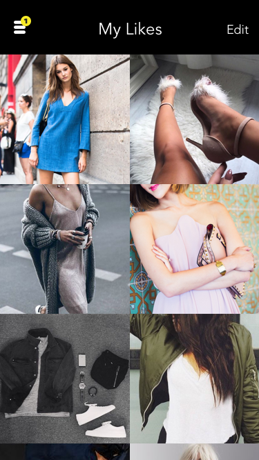
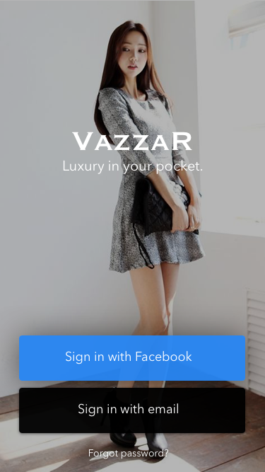

Understanding the gaps between our assumptions and reality was critical. To recognize the behaviors of our users, we conducted surveys and interviews.
Ideal shoppers were professional women between 25 and 35. They browsed for clothing on Facebook and Instagram. Liking photos on their feeds allowed them to keep up with fashion trends. They would then message stores over the weekends before going to check out clothing.
We decided to focus the experience around a personalized feed. We believed the feed would allow users to easily buy and inquire about an fashion pieces.
After establishing features, we created user stories and mapped out the UI. Understanding expected actions helped us build the architecture of the app.
We created wireframes for the main features of the app to plan the feel of our interface. We shared our preliminary designs with owners and began work on the prototype.
The founder wanted to use InVision, along with our research, as a proof of concept. We developed the prototype allowing the founder to go after seed funding.
 